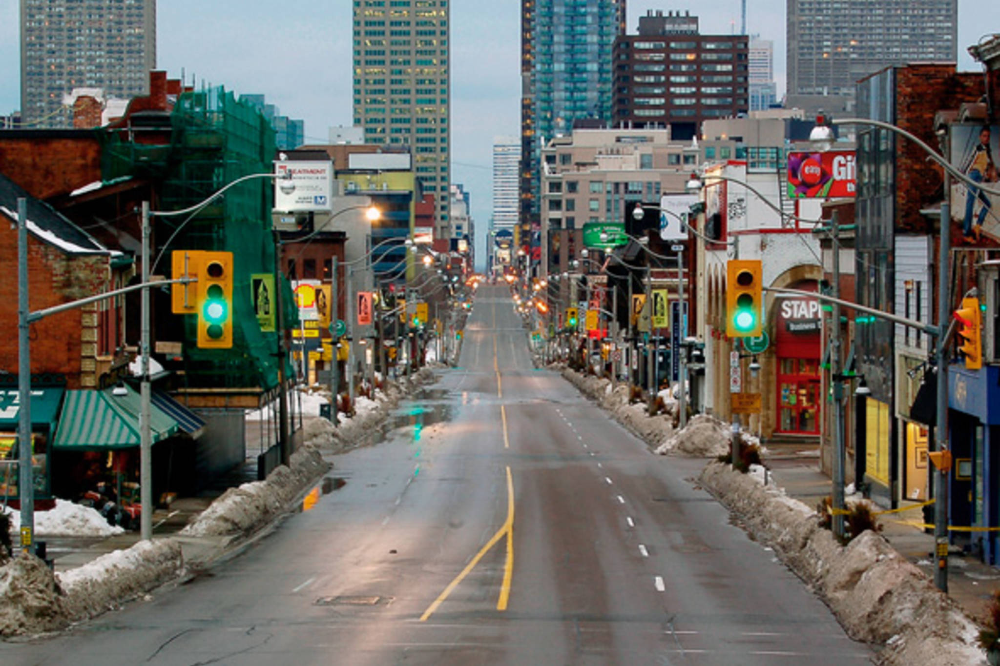

The largest and capital city of Ontario is Toronto, Ontario while the capital city of Canada is Ottawa, Ontario. First, Toronto is the city that has the largest population in Ontario and is the largest overall metropolitan area in all of Canada. Toronto is located on the northwestern part of Lake Ontario in the southeastern portion of the province. Toronto's current mayor is John Tory. Second, Ottawa is the city that has the second largest population in Ontario and is the 5th largest metropolitan area in Canada. Ottawa is located in Eastern Ontario, south of the Ottawa river which is where the border seperating Ontario and Quebec is located. Ottawa's current mayor is Jim Watson. Toronto's tourist attractions include the CN Tower, Toronto Eaton Centre, and the Royal Ontario Museum while Ottawa's tourist attractions include Parliment Hill, Canadian Museum of History, and National Gallery of Canada.


The professional sports teams in Ontario include the Hamilton Tigercats of the Canadian Football League (CFL), the Toronto Maple Leafs of the National Hockey League (NHL),the Toronto Blue Jays of
Major League Baseball (MLB), the Toronto Raptors of the National Basketball Association (NBA), the Toronto Argonauts of the Canadian Football League (CFL), Toronto FC of Major League Soccer (MLS), the Ottawa Senators of the National Hockey
League (NHL), and the Ottawa Redblacks of the Canadian Football League (CFL). Ontario is the only province in Canada that has at least 1 NBA and MLB team, while other provinces in Canada usually only
have an NHL and a CFL team. However, the provinces of Ontario, British Columbia, and Quebec have an MLS team.
Toronto Blue Jays, one of Ontario's professional sports teams
The Blue Jays are also Canada's only professional baseball team
Here are some of the national symbols that help make Ontario a very unique and special place:
| Name | Symbols |
|---|---|
| Tree | Eastern white pine |
| Flower | White Trillium |
| Bird | Common loon |
| Gemstone | Amethyst | Motto | Ut incepit fidelis sic permanet (Loyal she began, loyal she remains) |

1. Wasaga Beach, Ontario has the longest distance of freshwater beach in the world.
2. Ottawa, Ontario is one of the coldest capital cities in the world.
3. Yonge street in Toronto, Ontario is the longest street in the world.
4. The biggest nickel in Canada is found in Sudbury, Ontario.
5. Casa Loma in Toronto, Ontario is considered as the only genuine and real castle in North America.
Look at the inline frame below to see the tourist website of Ontario
Back to home page